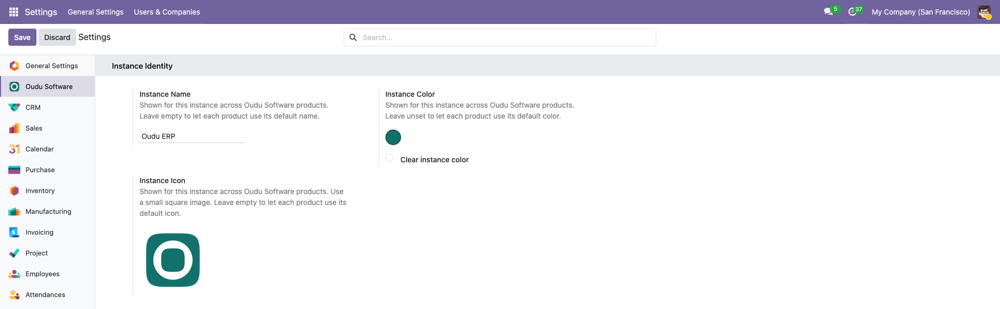
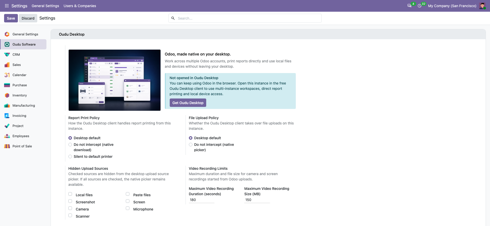
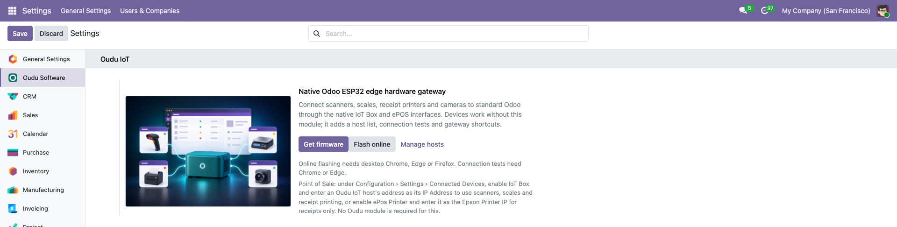

Oudu Base gives installed Oudu modules one shared settings home and a stable instance capability contract. Configure the instance identity once and let each product contribute only its own controls.

Set a shared instance name, identification color and square icon. Installed Oudu products read the same values instead of asking for duplicate identity settings.
Shared identity stays first in the Oudu Software settings page. Installed product modules append their real controls in a predictable order without creating additional settings entries.
Provides a machine-readable, instance-wide manifest for identity and installed Oudu integrations. The shared contract contains no user data and lets compatible clients degrade safely when a capability is absent.
Leave any identity value empty to preserve each product's own default. Normal browser access and unrelated Odoo behavior remain unchanged.
Oudu Base is complete on its own. When you are ready for more, each free Oudu product module installs on top of it, reads the same instance identity and adds only its own controls to the same settings page. Install one, both or neither.
The free Oudu Desktop client for Windows, macOS and Linux keeps several Odoo servers and accounts open side by side, prints reports straight to system and network printers, and uses local files, scanners, cameras and screens through explicit controls. Its AI Center answers read-only questions across the accounts you choose and shows the sources behind every answer, with no setting needed in any module.
The optional Oudu Desktop module adds the instance policies shown below: report printing, file upload sources and video recording limits.

Oudu IoT is a native ESP32 edge hardware gateway. Barcode scanners, scales, receipt printers and cameras connect through the IoT Box and ePOS interfaces Odoo already speaks, so they work in Point of Sale with standard Odoo even without any Oudu module.
The optional Oudu IoT module adds one host list under Oudu, IoT, Hosts, a connection test from your browser, a shortcut to each host's own gateway page, online flashing and a Point of Sale setup hint.

Supports Community and Enterprise editions for the Odoo series declared by this listing. Oudu Base is a shared dependency and does not replace Odoo or any Community or Enterprise module.